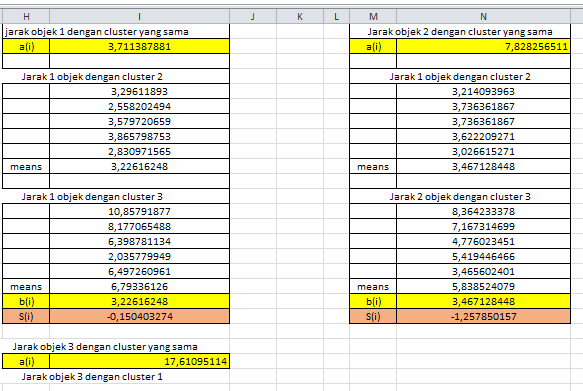

k-means data iris
Definisi dan Implementasi K-Means Clustering
Algoritma K-Means Clustering adalah suatu metode penganalisaan data atau metode Data Mining yang melakukan proses pemodelan tanpa supervisi (unsupervised) dan merupakan salah satu metode yang melakukan pengelompokan data dengan sistem partisi. Algoritma ini menerima masukan berupa data tanpa label kelas.
Kelebihan algoritma k-means, yaitu :
\1. Mudah untuk diimplementasikan dan dijalankan.
\2. Waktu yang dibutuhkan untuk menjalankan pembelajaran ini relatif cepat.
\3. Sangat Fleksibel, mudah untuk diadaptasi.
\4. Sangat umum digunakan.
Kekurangan algoritma k-means, yaitu :
\1. Karena menggunakan k buah acak, tidak di jamin untuk menemukan kumpulan cluster yang optimal
\2. dapat terjadinya curse of dimensionality, apabila jarak antara cluster yang satu dengan yang lain memiliki banyak dimesi
\3. Tidak optimal digunakan untuk data yang jumlahnya terlalu banyak sampai bermiliyar.
Tahapan Langkah Algoritma K-Mean:
\1. Menentukan Jumlah cluster data
\2. Tentukan titik pusat cluster
\3. Menghitung jarak obyek dengan centroid
\4. Mengelompokkan objek
\5. Jika kelompok data hasil perhitungan baru sama dengan hasil perhitungan kelompok data baru maka selesailah perhitungannya.
Dalam tahap ini akan dijelaskan langkah-langkah pengoperasian algoritma K-Means secara manual:
Diketahui : Jumlah Cluster = 3,
jumlah data =15
jumlah atribut = 4
1. Penentuan pusat awal cluster
Di ambil data ke 13 sebagai pusat cluster ke-1 6.9 3.3 5.7
Di ambil data ke 8 sebagai pusat cluster ke-2 6.7 2.3 4
Di ambil data ke 3 sebagai pusat cluster ke-3 4.7 3.2 1.3
\2. Perhitungan Jarak Pusat Cluster
Untuk mengukur jarak antara dengan pusat Cluster digunakan Euclidian Distance, kemudian akan didapatkan matriks jarak yaitu C1, C2 dan C3 sebagai berikut:
Rumus
Euclidian Distance:
\3. Penentuan pusat cluster baru
Setelah diketahui anggota tiap-tiap cluster kemudian pusat*cluster* baru dihitung berdasarkan data anggota tiap-tiap cluster sesuai dengan rumus pusat anggota cluster. Sehingga didapatkan perhitungan sebagai berikut :

Iiterasi ke-2
\4. Ulangi langkah ke 2 (kedua) hingga posisi data tidak mengalami perubahan.
\5. Di ambil data ke 13 sebagai pusat cluster ke-1 3,9 3,24 1,58 0,2
\6. Di ambil data ke 8 sebagai pusat cluster ke-2 5,04 2,76 3,8 1,5
7. Di ambil data ke 3 sebagai pusat cluster ke-3 4,66 2,88 6,02 2,42
Selanjutnya sama dengan langkah nomor 3 jarak hasil perhitungan akan dilakukan perbandingan dan dipilih jarak terdekat antara data dengan pusat cluster, jarak ini menunjukkan bahwa data tersebut berada dalam satu kelompok dengan pusat cluster terdekat.
Daftar Pustaka